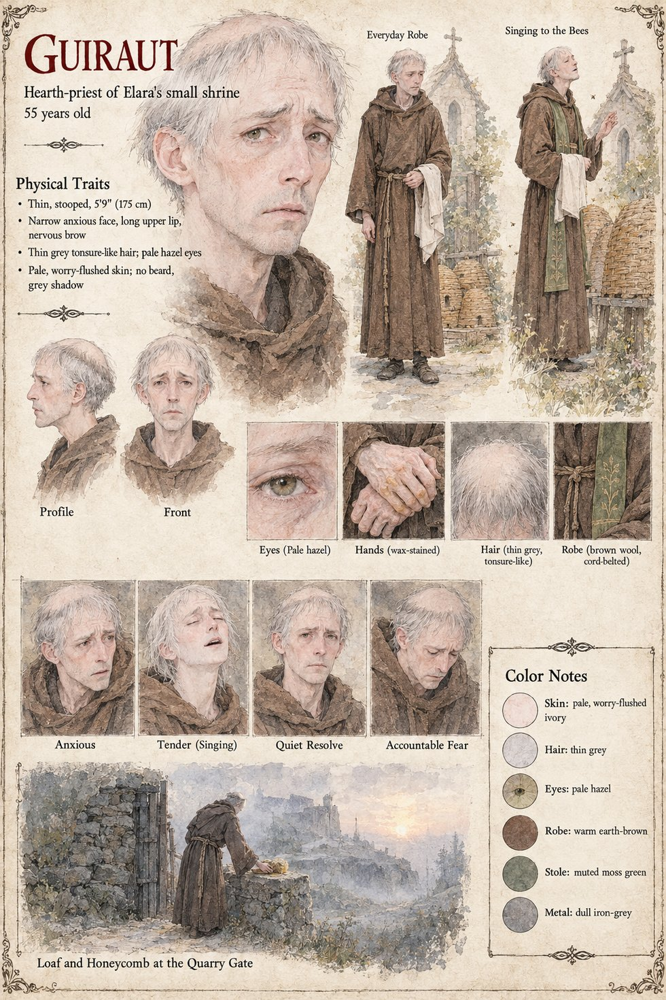

Guiraut
Hearth-priest of Elara's small shrine at Vilarnau · keeper of six skeps of bees · 55 years old
The hearth-priest of Elara's small shrine at the top of the lane at Vilarnau, a thin, anxious man of fifty-five who keeps bees in six skeps behind the church and sings to them, when he supposes himself unobserved, in a cracked and tender tenor that the village pretends not to have heard. He is not a bad priest. He is a worried one. He has served under three hierarchs at the temple of Auron in Castelmaur, each of whom has found him slightly deficient in zeal and none of whom has found a way to replace him, and he has acquired the permanent stoop of a man who expects at any moment to be asked to account for something. He watches the stranger from his doorway for a month, the bowing and the green's stone touched by half the parish, and says nothing, because he does not know what there is to say.
At Solan's Fire, the great autumn feast, the stranger hails the flame as he would a shrine at home, with two bows, two claps and a bow, and then declines the first slice of the pig. Guiraut, behind the fire with the serving-cloth over his arm, feels something cold settle in his stomach like a stone. Afterward he tells Ermengarda, with an apology in every line of his thin face, that the Moon-Man may bow to whatever he likes in his own house but not here, at Solan's fire, before the priest. Father, he bows to everything. He bowed to the ox. He does not laugh. He goes home and composes in his head, among the humming skeps, the letter he knows he will have to write to the Hierarch, and he composes it honestly, because he is an honest man; and the honest report of a thing is, to a certain kind of reader, indistinguishable from an accusation. Odilo's three-page letter to the baron is made from it, down to the foreign name of the stone, which Guiraut spelled as he heard it, Ysi; and it is that word, kept by the temple archive when it kept almost nothing else, that the chronicle of Castelmaur will use for the idol cast down.
In the first week of Kerren, in the plain teeth of an interdict that his office obliges him to enforce, he climbs the quarry road with a loaf under his cloak and a comb of honey in a cloth, leaves both at a gate that is shut on a dark cleft, and walks down again. Nobody thanks him, because nobody knows. The comb goes down a nine-year-old cooper's boy named Pons on the ninth night on the ridge, the last thing he tastes. In the spring Guiraut is removed to a chapel three valleys off, where the six skeps he carries with him fail in the first winter, as such hives will when the one who sang to them has stopped.
The manuscript gives his age, build in outline, bees, voice, stoop and the letter. The sheet's 5 ft 9 in, thin grey tonsure-like hair, pale hazel eyes, pale worry-flushed skin with a grey shadow of beard, wax-stained hands, brown cord-belted wool robe and moss-green stole are its own. Its expression panels run Anxious, Tender (Singing), Quiet Resolve and Accountable Fear, and its scenes are Everyday Robe, Singing to the Bees and Loaf and Honeycomb at the Quarry Gate, in which he bends over a dry-stone wall beside a barred gate at dawn, a castle in the mist behind.
“The honest report of a thing is, to a certain kind of reader, indistinguishable from an accusation.”
Appears In

Related Subjects


Related Records

On the twenty-eighth of Havren, at the great fire of Solan, Tomobe no Higaide bows to the god's flame as he was taught in his own country, with Ermengarda laughing behind him where she has pushed him into the front rank and the hearth-priest Father Guiraut watching with a serving-cloth over his arm; he will shortly refuse the first slice of the pig.